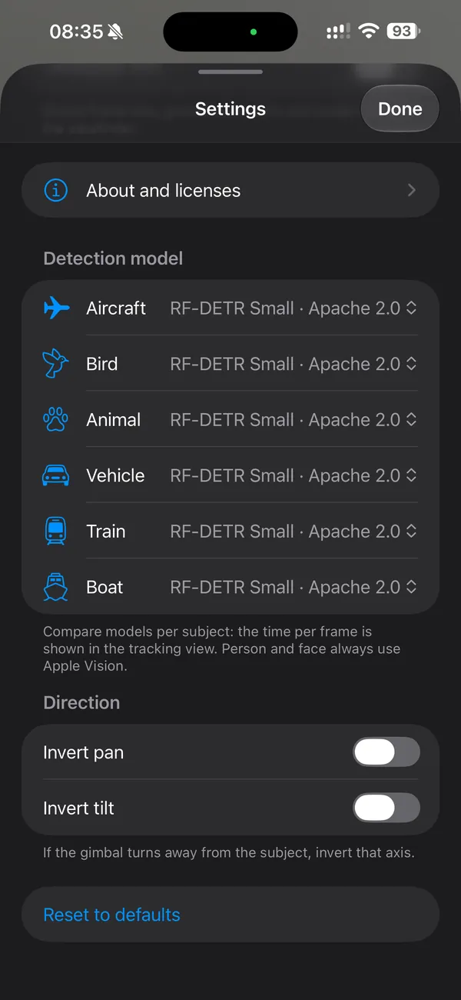

Ustawienia i pomoc
Język, tryb pomocy i suwaki dla zaawansowanych.



Najważniejsze przełączniki są w dwóch panelach bocznych. Cała reszta jest w lewym panelu w sekcji Wszystkie ustawienia.
Tryb pomocy
Znak zapytania u góry każdego panelu bocznego włącza tryb pomocy. Pod pozycjami menu pojawiają się wtedy żółte wskazówki z krótkim objaśnieniem, a przy ważniejszych także rysunek.
Język
Keepsight używa języka twojego iPhone’a. Aby wybrać inny tylko dla Keepsight, stuknij Język w sekcji Wszystkie ustawienia. Otworzą się ustawienia iPhone’a dla Keepsight. Razem z językiem zmieniają się polecenia głosowe.
Suwaki dla zaawansowanych
| Ustawienie | Znaczenie |
|---|---|
| Prędkość „Własny” | Wzmocnienie, tłumienie, prędkość maksymalna, przyspieszenie i strefa spokoju śledzenia. |
| Prędkość minimalna | Tylko dla AK4500: najmniejsze polecenie, na które gimbal jeszcze reaguje. Zwiększ ją, jeśli gimbal zatrzymuje się przy małych odchyleniach. |
| Przewidywanie po utracie | Jak długo gimbal obraca się dalej, gdy obiekt jest zasłonięty. |
| Kierunek | Odwróć obrót lub pochylenie. |
| Model wykrywania | Który model wykrywa obiekt. Do wyboru są RF-DETR Small i YOLOX-S. |
| Informacje dla programisty | Pokazuje w wizjerze liczbę klatek, polecenia gimbala i czas obliczeń modelu. |
| Przywróć domyślne | Przywraca suwaki śledzenia. |
O aplikacji i licencje
Znajdziesz tu wersję aplikacji, linki do tej strony oraz licencje używanych modeli wykrywania.